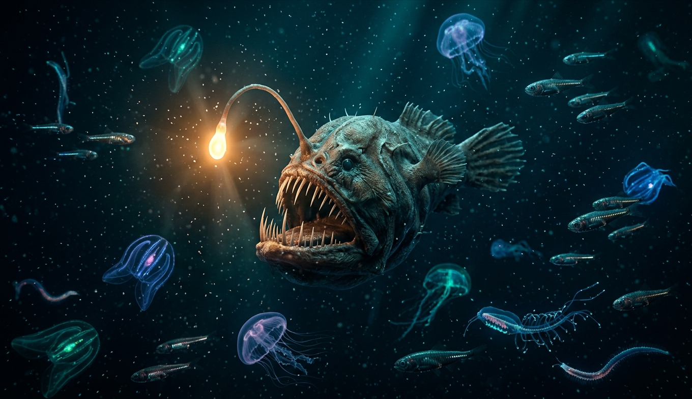
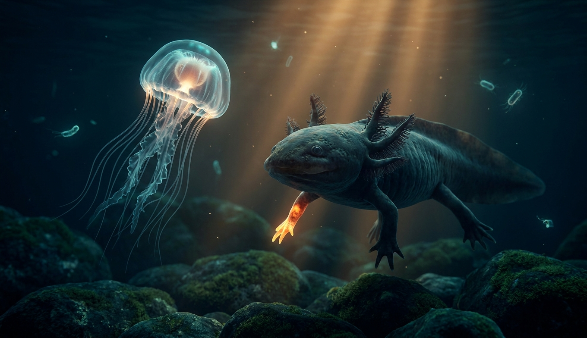
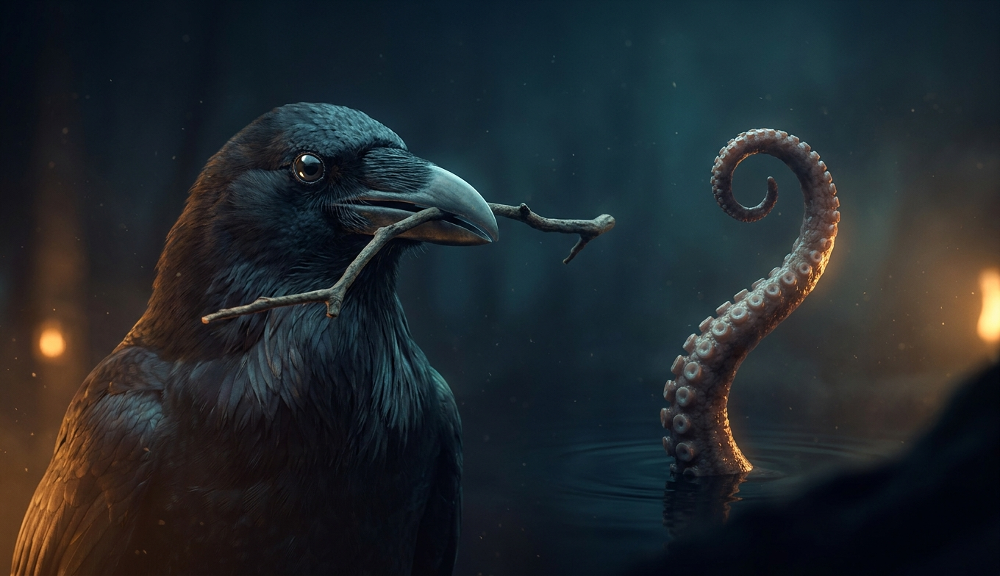
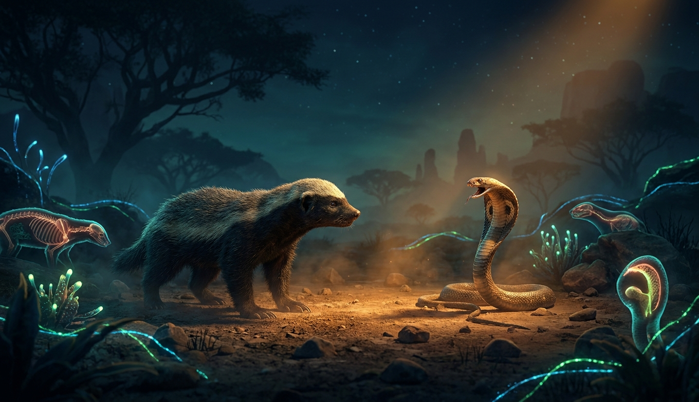
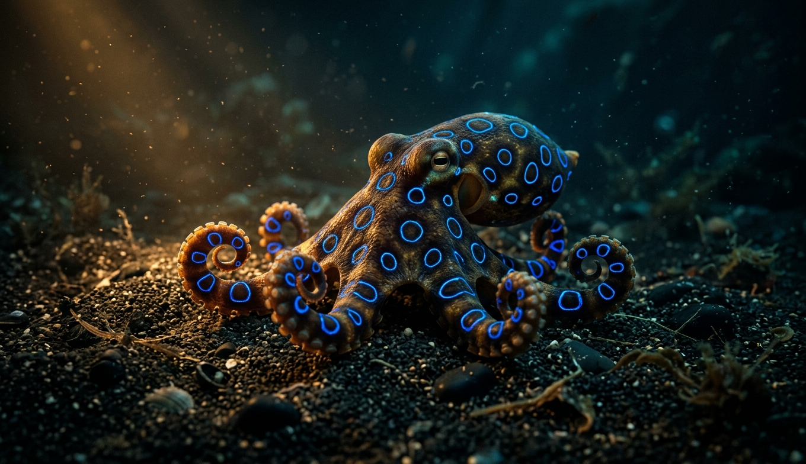
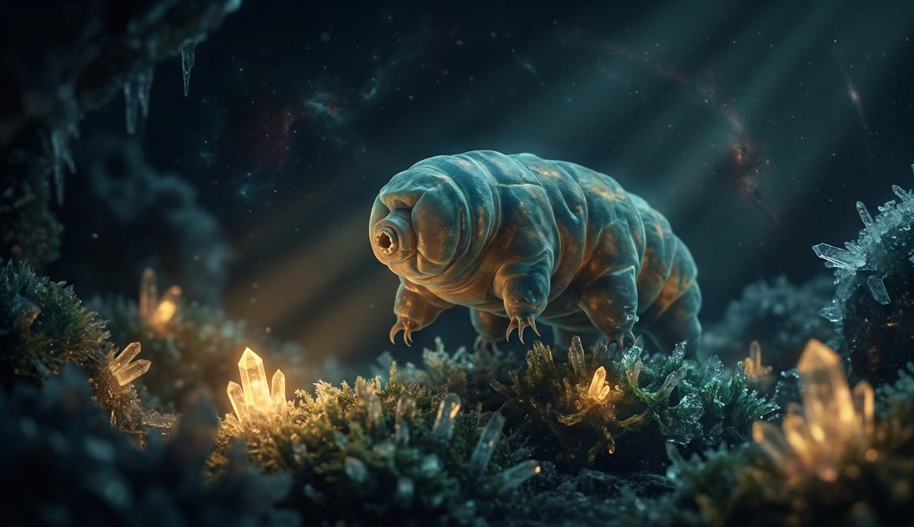
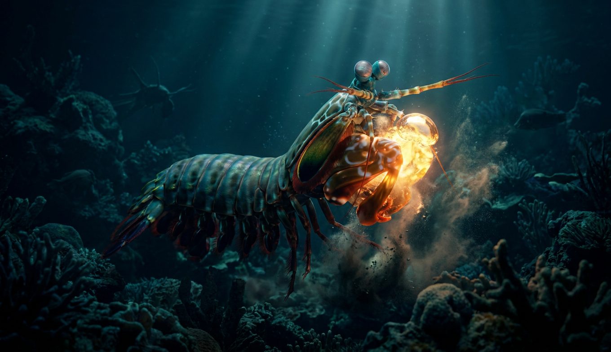
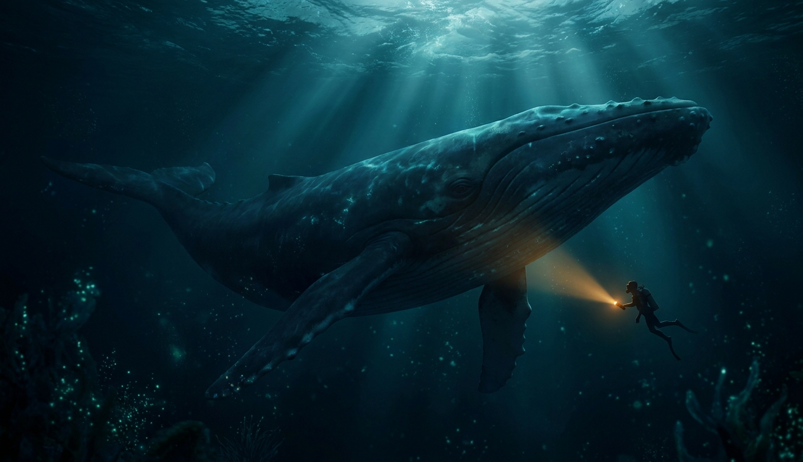
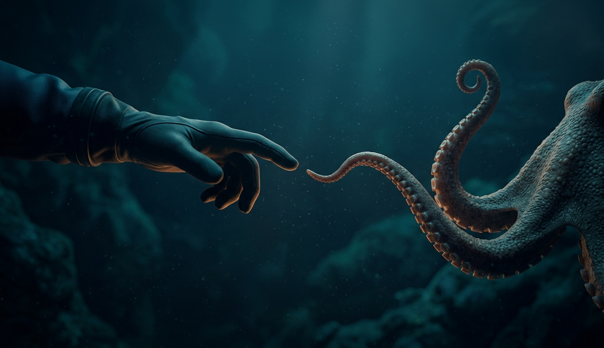

Марианская впадина, 11 километров. Темнота абсолютная, давление — тонна на квадратный сантиметр, еда — то, что упало сверху. И здесь живут. Причём некоторые — неплохо устроились.

Смерть от старости — не закон природы, а настройка по умолчанию. Некоторые её отключили: медуза, живущая задом наперёд, саламандра, отращивающая мозг, и зверёк, отменивший рак.

Разум на планете возникал несколько раз, независимо и на разном железе: на коре мозга у приматов, на паллиуме у птиц, на девяти мозгах у моллюска. Итоги впечатляют — местами неприятно впечатляют.

Двенадцать килограммов ярости, обедающей кобрами. Ёж, для которого гадюка — хрустящий снек. Опоссум, чья кровь — универсальное противоядие. Знакомься: звери, которым эволюция выдала иммунитет вместо инстинкта самосохранения.

Пока предыдущая глава училась яды терпеть, эта — их совершенствовала. Медуза, убивающая за минуты, улитка со шприцем инсулина и единственное млекопитающее со шпорами-инжекторами.

Вакуум космоса, заморозка в лёд, кипяток, годы без воды и радиация, убивающая всё живое. Для кого-то из этой главы перечисленное — просто вторник.

Удар с кавитационным взрывом, залп в 860 вольт, зрение в двенадцать цветовых каналов и полёт быстрее болида Формулы-1. Всё — серийные заводские опции, никакой фантастики.

Самое большое животное всех времён живёт сейчас — и оно почему-то не болеет раком так, как обязано по математике. А самый большой организм планеты — вообще не животное, и ты бы прошёл по нему, не заметив.

Всё это — не другие миры. Медуза, отменившая смерть, дрейфует в том же океане, где кит поёт на инфразвуке через сотни километров. Ворон, решающий головоломки, сидит на проводах у твоего дома. Тихоходка, которой не страшен космос, живёт во мху на твоей крыше — прямо сейчас.